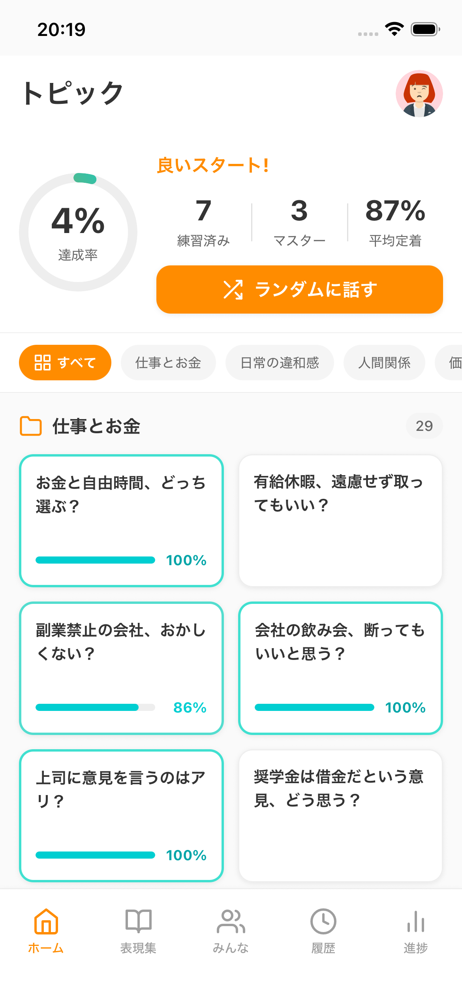
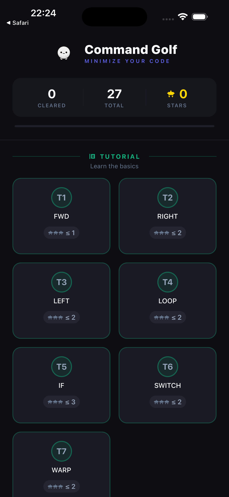
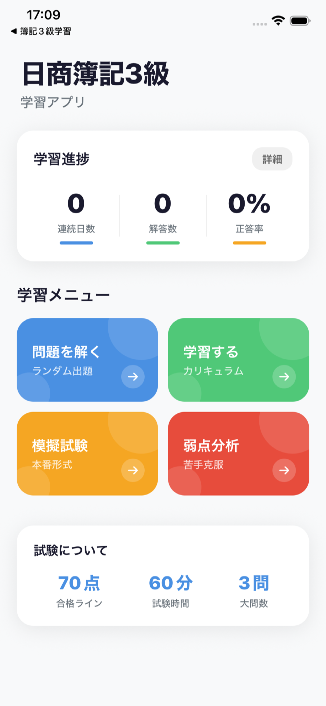
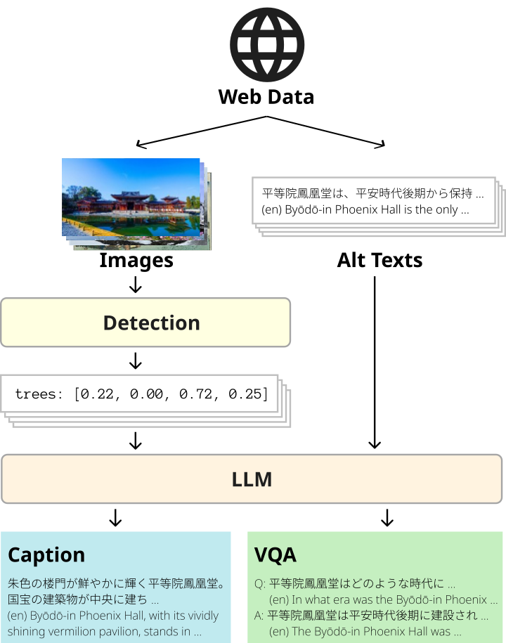

勝部 駿貴
東京大学。モバイルアプリの個人開発と、Vision & Language の研究をしています。
iOS Apps

AsTalk（アストーク）
自分の言葉で日本語を録音すると、AIが英語に翻訳してスピーキング練習の教材を作ってくれるアプリ。 文ごとの発音フィードバックやフルスピーチ練習ができる。
React Native / TypeScript / Expo / Cloud Functions / Firestore / Gemini API
App Store
Command Golf
できるだけ少ないコマンドでキャラをゴールまで導くパズルゲーム。 ループや条件分岐を組み合わせて最短解を目指す。50以上のステージとランダム生成モードあり。
React Native / TypeScript / Expo
App Store
東大生が作った簿記3級
日商簿記3級の合格を目指す学習アプリ。 5段階カリキュラムに沿って仕訳・勘定・決算を演習でき、SM-2による間隔反復と模擬試験モードを搭載。 累計178ダウンロード。
React Native / TypeScript / Expo / Zustand
App StoreOther Projects
SyncCube
K-POPのMVから顔認識でメンバーの個別カットを自動抽出し、3Dキューブの各面にマッピングして再生するシステム。 マイコンのIMUセンサーで視点をリアルタイムに操作できる。
Python / OpenGL / InsightFace / OpenCV / PySerial
GitHubResearch
DEJIMA: A Large-Scale Japanese Vision & Language Dataset
LREC 2026 — The University of Tokyo & RIKEN
日本語のVision-and-Language研究向けに、388万件の画像テキストペアからなるデータセットを構築した。 Web収集→物体検出→LLMの3段階パイプラインで、既存の日本語データセットの24〜39倍の規模を実現。

CLIP / RAM / Grounding DINO / LLM / LLaVA / Common Crawl